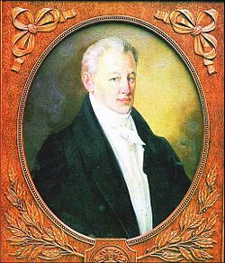

Клікнувши по зображенню ви можете швидко перейти на сторінку опису зображеного твору
Іван Петрович Котляревський — український письменник, поет, драматург, громадський діяч. Він увійшов в історію української культури як зачинатель (родоначальник) нової української літератури.

Іва́н Петрович Котляревський (29 серпня (9 вересня) 1769, Полтава — 29 жовтня (10 листопада) 1838, Полтава) — український письменник, військовий, класик нової української літератури, громадський діяч.
Підтримував зв'язки з декабристами. Його поема «Енеїда» (1798) стала великим твором загальнонаціонального значення нової української літератури, написаним народною мовою.
Котляревський зробив найвагоміший внесок у становлення сучасної української літературної мови. В умовах занепаду всіх різновидів староукраїнської писемної мови, поема «Енеїда», п'єси «Наталка Полтавка» і «Москаль-чарівник», написані на основі живого усного мовлення народу, започаткували новий етап формування літературної мови.